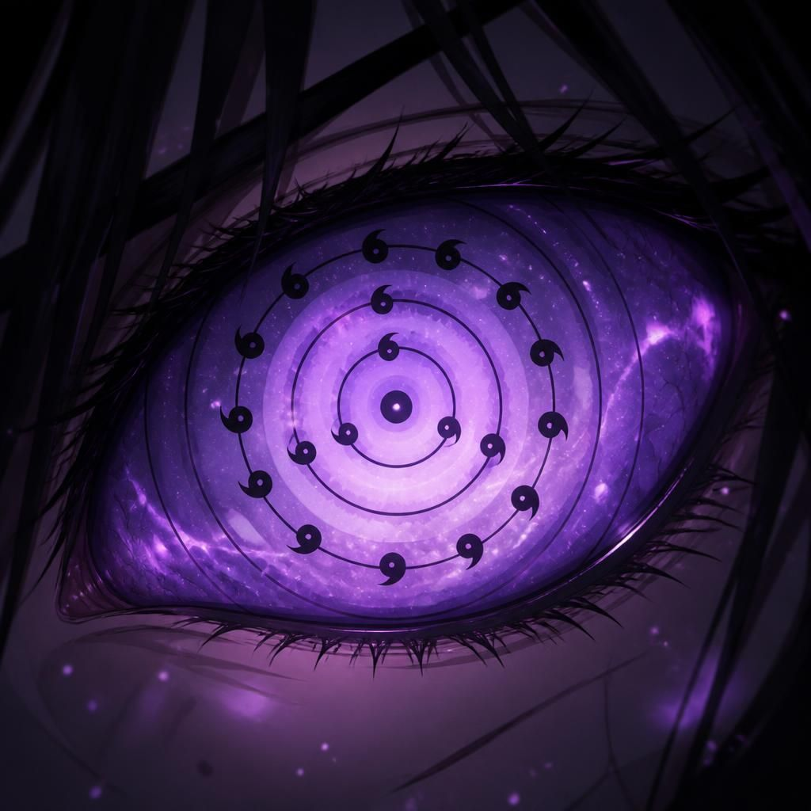
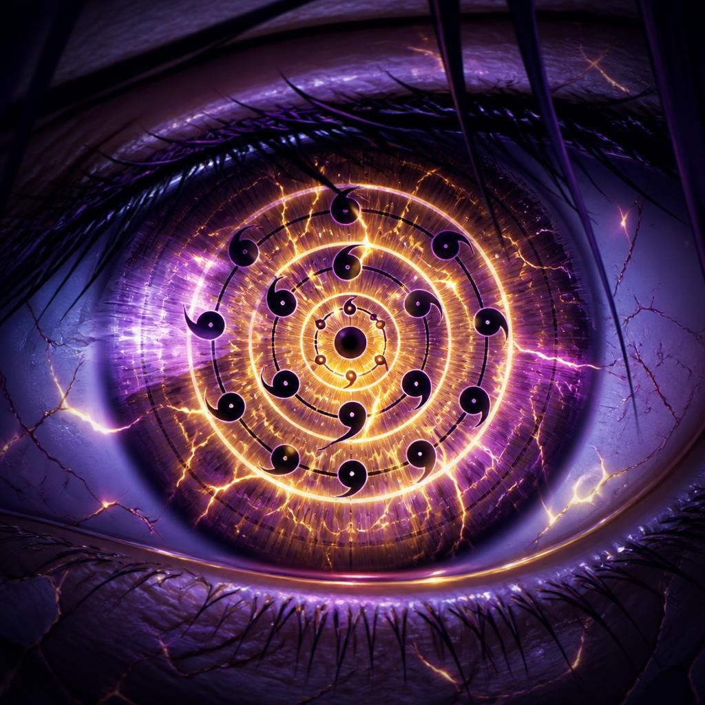

Kuroshin
Rinnegan de 5 Anéis (Ômega). É a forma de campo e pressão do personagem, acima do patamar comum, mas fora da categoria de vinte anéis dos portadores supremos.
Aiko
Rinnegan de 5 Anéis (herdeiro). Amplia o domínio temporal e a leitura de fluxo do campo.
Kael
Rinnegan de 5 Anéis (herdeiro). Funciona junto da especialidade pessoal dele para contaminar chakra, técnicas e estabilidade do oponente.
Mizuki
Rinnegan de 5 Anéis (herdeira). Reforça o eixo Shinsei + Senka. É poder herdado, não a forma suprema central.
Akari
Tenseigan + Rinnegan de 5 Anéis (herdeira). Dōjutsu duplo: a base Hyūga soma-se à mesma camada herdeira dos outros quatro.
Chakra de fogo reescrito em chakra de terra. Chakra de genjutsu reescrito em neutro. Chakra negativo de Kaguya reescrito em chakra comum.
1. Kokuten · 刻点
Cria um ponto invisível no campo de batalha — um "olho cego" que só o próprio usuário consegue enxergar ou detectar chakra ali dentro. Qualquer inimigo que entre nessa área perde temporariamente a capacidade de ser rastreado por sensores externos, tornando-a tanto um refúgio tático quanto uma armadilha de emboscada perfeita.
2. Shōheki · 障壁
Ao selecionar uma área do campo, o usuário altera a trajetória de qualquer ataque que a atravesse em até 180° — na prática, devolve o golpe na direção de onde veio ou o redireciona para outro alvo presente na mesma linha de força.
3. Kigō · 記号
Grava um selo ocular invisível e permanente sobre um alvo, que dura enquanto a batalha continuar. Com a marca ativa, o portador sempre sabe a localização exata do marcado, sente oscilações no nível de chakra dele e percebe o instante em que uma técnica começa a ser reunida, mesmo fora do campo de visão direto.
4. Mugen Sen · 無限線
Projeta, por uma fração de segundo, centenas de trajetórias futuras possíveis de todos os ataques próximos, como uma rede de linhas sobrepostas no campo de visão. O portador escolhe a rota mais vantajosa entre elas — esquiva, bloqueio ou contra-ataque — quase sem margem de erro.
5. Rensa · 連鎖
A cada golpe que conecta contra o mesmo alvo, o ataque seguinte contra aquele adversário ganha um acréscimo de velocidade e precisão, criando uma progressão que fica cada vez mais difícil de interromper conforme a sequência avança.
6. Kūkan Kusari · 空間鎖
Correntes de chakra invisíveis se fecham ao redor do espaço que envolve o inimigo, dificultando esquivas bruscas e travando as brechas usadas por técnicas de teletransporte, como se o próprio ar ao redor do alvo resistisse ao movimento.
7. Zanshin · 残心
O usuário nunca perde a noção de tudo que acontece ao seu redor, mesmo no auge de um ataque ou defesa — não existe ângulo cego, ponto surpresa ou golpe furtivo que escape da percepção enquanto essa habilidade estiver ativa.
8. Kōsaten · 交差点
Força dois ataques diferentes, próprios ou alheios, a colidirem entre si no ar, anulando ambos antes de atingirem qualquer alvo — útil tanto para neutralizar um golpe recebido quanto para desviar um ataque aliado de uma trajetória perigosa.
9. Gyakuten · 逆転
Inverte por um instante a direção do movimento de um alvo. Quem corria para frente é lançado para trás na mesma velocidade que levava, quebrando o timing de qualquer avanço ou retirada calculada.
10. Kage Utsushi · 影写し
Troca apenas as sombras de duas pessoas. Durante alguns segundos, os movimentos de ambas ficam invertidos — o que uma faz com a mão direita, a outra reproduz com a esquerda — desorganizando completamente a coordenação motora dos dois alvos.
11. Kōdō Yomi · 行動読み
Lê a intenção do inimigo antes mesmo do movimento começar, captando a tensão muscular e o fluxo de chakra que precedem qualquer ação — o golpe é percebido no instante em que é decidido, não em que é executado.
12. Seigen · 制限
Escolhe uma habilidade específica do inimigo para bloquear temporariamente. Assim que ela é usada uma vez, entra em um período de recarga forçada, impedindo reutilização imediata mesmo que o usuário original ainda tenha chakra disponível.
13. Kōkan no Yaiba · 交換の刃
Qualquer corte que o usuário realize pode ser instantaneamente redirecionado para outra parte do corpo do alvo já em andamento, tornando inútil qualquer tentativa de proteger apenas o ponto óbvio de ataque.
14. Kyosei · 強制
Empurra o chakra do inimigo através do olhar, obrigando-o a dar um único passo em uma direção escolhida pelo usuário — pequeno, mas suficiente para tirá-lo de uma posição defensiva ou empurrá-lo para uma armadilha já preparada.
15. Shōmetsu · 消滅
Apaga por alguns segundos qualquer rastro de chakra deixado pelo usuário, tornando-o impossível de rastrear por sensores, cães ninja ou técnicas de detecção nesse período — ideal para reposicionamento silencioso em pleno combate.
16. Enkei · 円形
Cria um círculo invisível no campo onde toda técnica que entra perde 30% da velocidade original, como se o próprio espaço dentro do círculo oferecesse resistência a qualquer chakra em movimento.
17. Kankaku Bunri · 感覚分離
Desconecta momentaneamente os sentidos do inimigo do processamento cerebral — o corpo continua recebendo estímulos, mas o cérebro os interpreta com atraso, fazendo as reações chegarem sempre um instante tarde demais.
18. Jikan Sashi · 時間差し
Marca um objeto ou pessoa em um estado específico. Em até 30 segundos, o usuário pode fazer esse alvo retornar exatamente à posição e condição registradas no momento da marcação, desfazendo qualquer dano ou deslocamento sofrido depois.
19. Hakkyō · 発鏡
Cada vez que o portador observa um golpe específico sendo usado contra ele, sua capacidade defensiva contra aquele mesmo tipo de ataque aumenta — o corpo e o olho aprendem juntos, tornando repetir a mesma técnica uma aposta cada vez pior para o adversário.
20. Ōgi: Shin no Ōte · 奥義・真の王手
Depois de analisar completamente um inimigo, o portador prevê sua estratégia inteira, identifica o ponto fraco central e enxerga o instante exato em que a guarda dele ficará aberta, direcionando o próximo golpe com precisão e poder muito acima do normal. Não garante vitória automática — apenas abre a janela perfeita para que o portador a aproveite, se conseguir executar o golpe a tempo.
21. Zettai Kyori · 絶対距離
Cria uma distância mínima invisível entre o portador e qualquer ataque físico direcionado a ele: por mais rápido que o golpe chegue, ele sempre "erra" por poucos centímetros, como se o próprio espaço ao redor do portador se recusasse a permitir contato indesejado.
22. Ginga Ken · 銀河圏
Projeta uma esfera de gravidade alterada ao redor de um ponto escolhido do campo, puxando lentamente tudo que estiver próximo — projéteis, adversários, escombros — para o centro, comprimindo-os antes de liberar tudo de volta com força ampliada.
23. Musō no Kagi · 夢想の鍵
Localiza instantaneamente o ponto mais vulnerável de qualquer selo, barreira ou domínio criado por outro dōjutsu, revelando exatamente onde e como ele pode ser rompido.
24. Tenchi Gyaku · 天地逆
Inverte momentaneamente a orientação da gravidade em uma área do campo, fazendo com que tudo dentro dela — inimigos, objetos, os próprios ataques — caia "para cima" por um instante, quebrando completamente o senso de equilíbrio de quem está dentro.
25. Fuin Kaijo · 封印解除
Lê e desfaz remotamente selos de chakra alheios — armadilhas, prisões, restrições — sem precisar de contato físico, apenas observando o padrão do selo por um breve instante.
26. Kage no Tsubasa · 影の翼
Manifesta asas espectrais de chakra atrás do portador, permitindo voo total e mudanças bruscas de direção no ar sem perda de velocidade, ideais para combates aéreos contra Susanoo ou bijū.
27. Rinne no Kodō · 輪廻の鼓動
Sincroniza o próprio chakra com o de um aliado próximo, permitindo compartilhar temporariamente resistência física, velocidade de regeneração e reserva de chakra entre os dois.
28. Setsudan Ha · 切断波
Libera uma onda invisível de chakra cortante que separa, sem dano físico direto, a conexão entre uma técnica e seu usuário — desfazendo clones, invocações e constructos de chakra à distância.
29. Kongen no Me · 根源の眼
Permite enxergar, por um instante, a origem exata do chakra de qualquer técnica observada — se é natural, herdado, artificial ou emprestado — revelando fraquezas ocultas de poderes roubados ou copiados.
30. Ten'i Kōkan · 転位交換
Uma evolução em escala do Amenotejikara: troca de posição instantaneamente não apenas objetos ou pessoas, mas porções inteiras do terreno, criando armadilhas geográficas em pleno combate.
31. Zetsu'en · 絶円
Cria um campo circular onde nenhuma técnica de cura, regeneração ou invocação funciona enquanto o portador mantiver o olhar fixo na área.
32. Hikari Nomi Michi · 光のみ道
Abre um corredor de luz que anula temporariamente a invisibilidade, a camuflagem de chakra e técnicas de ocultação dentro do seu alcance, revelando qualquer inimigo escondido.
33. Kuzureru Kabe · 崩れる壁
Enfraquece estruturalmente qualquer barreira física ou de chakra observada, fazendo-a ruir sozinha segundos depois, sem precisar de um ataque direto.
34. Shin'itsu · 心逸
Sincroniza brevemente a percepção do portador com a de um aliado, permitindo enxergar o campo de batalha pelos olhos dele e coordenar ataques com precisão impossível de outra forma.
35. Bakuen Kyoshin · 爆円巨進
Concentra uma esfera de chakra puro que, ao contato, não explode imediatamente — implode primeiro, sugando tudo ao redor por uma fração de segundo antes da explosão final.
36. Kyozō Bunri · 虚像分離
Separa a imagem visual de um alvo da sua posição real por instantes, fazendo qualquer ataque direcionado visualmente atingir apenas uma projeção vazia.
37. Tamashī no Kusari · 魂の鎖
Corrente de chakra que não prende o corpo, mas a vontade do alvo — por segundos, o inimigo perde a capacidade de decidir ativar qualquer técnica, mesmo mantendo controle motor total.
38. Rinne Tenshi · 輪廻天視
Concede visão panorâmica total do campo de batalha inteiro por alguns segundos, como se o portador enxergasse de cima, captando posição, chakra e intenção de todos simultaneamente.
39. Genkai Toppa · 限界突破
Remove temporariamente o próprio limite natural de velocidade e força do portador, permitindo desempenho muito acima do habitual em momentos de decisão total.
40. Ōgi: Sōzō no Me · 奥義・創造の眼
A técnica suprema: por um instante, o portador enxerga não o que existe, mas o que poderia existir — permitindo moldar uma única alteração pequena e precisa na realidade local (reverter um corte, redirecionar um golpe já em curso, endireitar algo quebrado) sem precisar de Susanoo ou Mokuton para isso.
1. Kisei · 寄生
Cria uma área de até 100 metros onde qualquer alvo pode receber um "selo ocular". Enquanto marcado, o portador sempre sabe sua localização, prevê sua direção de movimento por alguns segundos e pode trocar de posição com ele — uma versão ampliada e à distância do próprio Amenotejikara.
2. Shōgi · 証儀
Ao tocar ou mirar diretamente um inimigo, o portador grava sua assinatura de chakra. A partir daí, consegue prever o próximo movimento dele com precisão crescente — quanto mais tempo dura o combate, mais profunda fica a leitura, até antecipar combinações inteiras de ataques contra o mesmo adversário.
3. Kōkan · 交換
Uma evolução direta do Amenotejikara que não troca apenas posições, mas dano, ferimentos, objetos, ataques inteiros, partes do terreno e até estados físicos — como transferir a condição de "preso" de um aliado para o próprio inimigo.
4. Shin'en no Ito · 深淵の糸
O portador enxerga linhas invisíveis conectando pessoas, armas, clones e técnicas entre si. Pode cortar essas ligações, redirecioná-las ou religar um ataque a um alvo diferente — uma Bijūdama lançada contra ele, por exemplo, pode ser redirecionada para outro inimigo no campo.
5. Zettai Kansoku · 絶対観測
Por alguns segundos, todo movimento ao redor parece extremamente lento aos olhos do portador, cujo cérebro passa a processar milhares de possibilidades de combate e calcular automaticamente a melhor resposta para cada ação do inimigo. Não é o tempo que desacelera — é a percepção do usuário que acelera.
6. Hakai no Fuse · 破壊の伏せ
O portador deixa marcas invisíveis espalhadas pelo espaço ao redor. Quem passa por uma delas pode ser teleportado alguns metros, ter um membro trocado de posição ou ficar preso em um pequeno loop espacial por instantes — ideal para montar armadilhas silenciosas ao longo de uma luta prolongada.
7. Kyōmei · 共鳴
Depois de observar uma técnica três vezes, o Rinnegan compreende completamente seu padrão de execução, revelando o ponto fraco, o momento exato para interrompê-la e reduzindo sua eficácia sempre que for usada novamente contra o mesmo portador.
8. Shibari · 縛り
Com contato visual direto, o portador bloqueia por alguns segundos uma função específica do chakra do adversário — pode impedir moldagem de chakra, o uso de um elemento específico, teleporte, regeneração ou até genjutsu, dependendo do que for selecionado.
9. Kekkai no Yo · 結界の陽
Cria barreiras quase invisíveis pelo campo que mudam a trajetória de ataques, refletem projéteis, alteram levemente a gravidade local e guiam o inimigo, sem que ele perceba, para posições cada vez mais desfavoráveis.
10. Ōte · 王手
A técnica suprema dos herdeiros. Depois de analisar completamente um adversário, o Rinnegan registra por completo seu estilo de luta e, por um curto período, prevê praticamente todas as suas ações, calcula o contra-ataque perfeito e indica o instante exato para encerrar o combate com um único golpe. Quase inútil contra um inimigo desconhecido, mas devastadora conforme a batalha se prolonga — recompensa paciência e leitura estratégica.
Caminho da Criação Celestial (Ex-Deva)
Não controla apenas gravidade, mas a Força Fundamental Forte/Fraca. Pode criar singularidades (micro-buracos negros) para sugar inimigos ou gerar estrelas de nêutrons do tamanho de uma bola de gude para esmagar dimensões.
Caminho da Matéria-Prima (Ex-Asura)
Transcende mecanismos. Materializa qualquer elemento químico ou composto orgânico instantaneamente (diamante, adamantium, venenos personalizados ou até órgãos vivos complexos).
Caminho da Alma Arquetípica (Ex-Humano)
Não só lê mentes, mas cria consciências do zero. Pode implantar personalidades em objetos ou gerar um exército de "Egrégoras" (seres de pura vontade) que obedecem cegamente.
Caminho da Gênese Bestial (Ex-Animal)
Invoca não bestas contratadas, mas cria bestas mitológicas únicas (dragões de 7 cabeças, fênix imortais, leviatãs espaciais) usando apenas chakra bruto, sem necessidade de pactos.
Caminho da Absorção Divina (Ex-Preta)
Absorve conceitos abstratos (calor, fricção, luz, medo e esperança) convertendo-os diretamente em energia criativa para alimentar outras habilidades.
Caminho do Julgamento da Eternidade (Ex-Naraka)
Revive os mortos em escala massiva (milhões de pessoas) com corpos perfeitos e imortais. O "Rei do Inferno" agora é um Anjo da Criação que reverte qualquer dano em um raio de 10 km.
Caminho da Árvore da Origem (Ex-Gedo)
Invoca a "Árvore da Criação" (versão branca da Shinju). Ela não drena chakra, mas gera chakra infinito e pode reescrever o DNA de toda uma espécie instantaneamente.
Expansão de Gênesis
Aumenta exponencialmente o tamanho de qualquer objeto criado (um grão de areia vira uma lua).
Redução ao Pó Primordial
Desintegra matéria em partículas subatômicas (quarks) e as armazena para reutilização.
Escudo do Firmamento
Barreira esférica que anula qualquer ataque, transformando a energia cinética em novo chakra para o usuário.
Lanças do Destino
Projéteis de luz sólida que buscam qualquer alvo, atravessando barreiras dimensionais.
Pilar da Criação
Raios de energia branca que não destroem, mas reescrevem a estrutura do que tocam (transforma inimigos em estátuas de sal ou árvores de cristal).
Mundo Espelhado (Domínio Criativo)
Cria uma bolha dimensional onde o usuário se torna onipotente local — pode criar e deletar leis físicas dentro da bolha.
Martelo do Forjador Cósmico
Golpe físico que remodela o terreno em escala continental, criando montanhas e oceanos instantaneamente.
Corte do Vazio Preenchido
Apaga a existência de algo e imediatamente preenche o vazio com algo criado pelo usuário (ex: apaga sua ferida e cria uma armadura no lugar).
Coroa da Soberania
Suprime a vontade de todos em um raio de 1 km, forçando-os a reconhecer o usuário como seu "criador", paralisando inimigos fracos.
Olho da Omnisciência
Visão que enxerga a composição molecular, a história temporal e a linha do futuro de qualquer ser.
Punho da Criação
Materializa uma mão gigante de energia que pode esmagar ou moldar cidades inteiras como se fossem argila.
Criação de Dimensões
Abre portais e cria bolsões de realidade com leis físicas personalizadas (ex: bolsão onde o fogo queima gelo).
Paradoxo da Criação
Rebobina o tempo de um alvo para seu estado recém-criado (cura absoluta) ou o acelera até a decomposição total em segundos.
Salto da Gênese
Teletransporte instantâneo entre qualquer ponto do multiverso, criando um novo "caminho espacial" onde antes não havia.
Congelamento do Criador
Para o tempo localmente (num raio de 100m), permitindo que o usuário molde o cenário e as posições dos inimigos antes de descongelar.
Loop da Criação Eterna
Prende o inimigo em um loop temporal onde ele é recriado e destruído infinitamente, drenando sua vontade.
Distorção do Espaço-Criação
Dobra o espaço ao redor, fazendo com que ataques inimigos nunca o atinjam (desviam para outras dimensões) e seus ataques atinjam sempre o ponto fraco.
Visão do Futuro Certeiro
Pode visualizar todas as linhas do tempo possíveis e escolher ativamente a que mais lhe convém, "criando" o futuro ideal.
Apagão Histórico
Remove um ser do fluxo do tempo como se nunca tivesse sido criado (funciona apenas em seres com chakra inferior ao do usuário).
Chakra do Vazio
O usuário nunca fica sem chakra; extrai energia do vácuo quântico entre dimensões, gerando reservas infinitas.
Regeneração Absoluta (Fênix)
Qualquer ferimento, incluindo destruição total do cérebro ou coração, regenera instantaneamente enquanto o olho existir.
Adaptação Criativa
O corpo do usuário se adapta passivamente para sobreviver a qualquer ambiente (vácuo, fundo do mar, dentro do sol).
Linguagem da Criação
Pode comunicar-se com qualquer ser vivo ou inanimado, comandando a própria realidade a obedecer.
Imortalidade Conceitual
Enquanto a ideia de "criação" existir no universo, o usuário não pode morrer de forma definitiva.
Forja de Kekkei Genkai
Pode criar e conceder habilidades de sangue (Sharingan, Byakugan, Mokuton, etc.) a outros seres, despertando linhagens adormecidas.
Criação de Artefatos Lendários
Pode forjar itens com habilidades únicas (espadas que cortam dimensões, armaduras que refletem jutsu) que persistem mesmo sem o chakra do usuário.